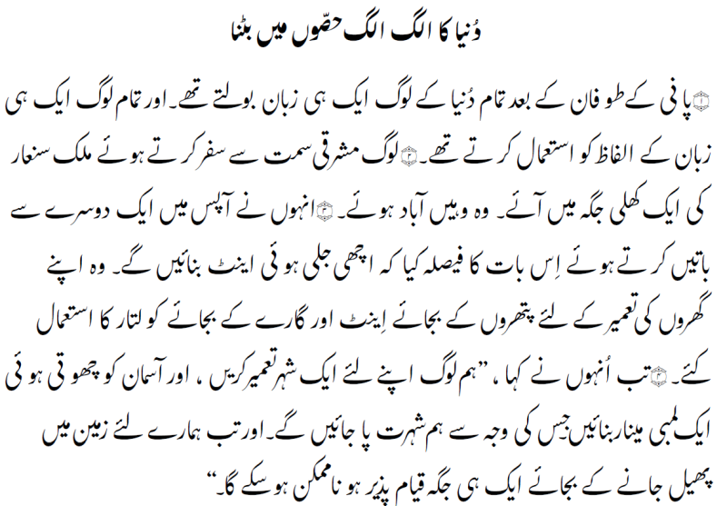

Awami Nastaliq - Design
Nastaliq style Arabic is one of the most complex forms of writing in the world, and standard font technologies are not quite up to the challenge of handling its sloping, calligraphic form. For this reason, SIL's smart-font technology, Graphite, has been extended with some special capabilities to address the particular challenges of this beautiful but complicated form of writing.
The sloping nature of Nastaliq creates a great challenge: glyph collisions. A straightforward, naive layout of base glyphs, nuqtas, and diacritics will inevitably result in a rendering where the glyphs collide, forming ugly and even unreadable text. Fixing these collisions is exacerbated by the large number of glyphs and the complex positioning created by the sloping baseline.
Workarounds to current font technologies have been used to create Urdu-specific fonts, but these approaches do not scale well when multiple languages and a variety of diacritics are needed. For this reason, SIL International has developed Awami Nastaliq, specifically intended to support lesser-known languages of South Asia (using an extended version of Graphite). While there are several fonts that support Urdu, this is the first Nastaliq-style font that supports a wide variety of lesser-known languages.
Awami Nastaliq is a Nastaliq-style Arabic script font supporting a wide variety of languages of South Asia, including but not limited to Urdu. Lesser-known languages often require more vowel diacritics than Urdu. They may use a different set of base characters and diacritics, and the base characters often include more nuqtas to represent sounds that are not present in Urdu or standard Arabic. This font includes all the vowel diacritics and base characters (that we are aware of) required for languages using the Nastaliq style of Arabic script.
One font from this typeface family is included in the Awami Nastaliq release:
- Awami Nastaliq Regular
More detailed design information is available from What is Special About Awami Nastaliq?
Type Samples
Type samples showing some of the inventory of glyphs can be found here: Awami Nastaliq Type Sample.
An example of some text is shown below.
Character Set
For a complete list of characters included in Awami Nastaliq, see Character Set Support.
Automatic collision-fixing
To solve the problem of collisions, we have enhanced Graphite with an automatic collision-fixing capability. The Graphite engine makes use of a simplified form of the rendered glyphs to detect collisions, shift nuqtas and diacritics, and add kerning to create nicely laid-out text. Besides fixing collisions, the shape-based kerning mechanism can also create diagonal overlaps in the sloping text, as Nastaliq is traditionally written.
Vowel diacritical marks
Few Nastaliq style fonts handle vowel marks well. This is acceptable for Urdu, but not for other languages, such as Saraiki and Marwari, that make more extensive use of vowel marks. Awami Nastaliq provides good support for the vowel marks often used by other languages.
User-selectable Font Features
Alternate glyphs that are available through features are demonstrated in the Features document.